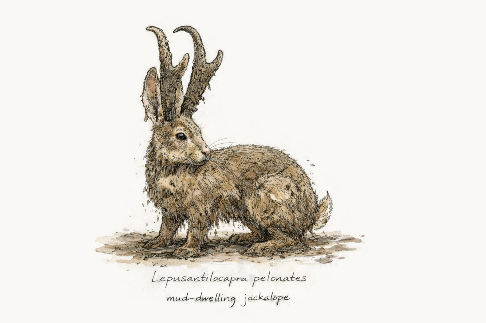
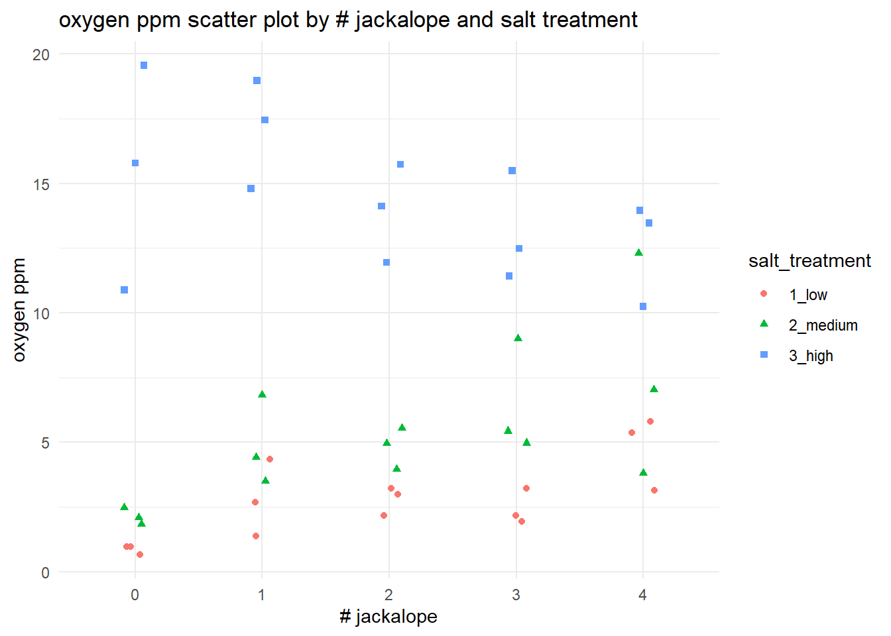

source("class_r_scripts/load_packages.r")Data Exploration
Introduction
Consider the following scenario. Being an expert in one type of analysis, you are asked (by some really awesome colleagues) to analyze a dataset that you have never seen. You meet with your colleagues; they describe the data, their goals, and their timeline; you send some appropriate follow-up questions. They answer. All seems good. You jump right into analysis. You spend two weeks (!) working on a complex analysis only to discover that your collegues failed to explain that (1) half of the data were problematic because, unbeknowst to them, one of their study subjects (yep, a jackalope) infiltrated the field crew and collected data for a month, and (2) several data points represented samples that were contaminated with jackalope saliva.
Without spending time to explore the nature of the dataset –something that should be done every time– you chose to skip a vital step and wasted quite a bit of time. All of the actions downstream in your analytical workflow are now rife with issues. The obvious lesson here is to take your time with and be very systematic in your approach to data exploration. Even if you are the data collector, do not assume that you can skip the step. Data Demons always work their way into a given dataset, especially when you are at the tail end of a project or your degree.
Goals for this week (Week 3)
By the end of this week, you should be able to:
- Describe some of the advantages and disadvantages of several types of data exploration approaches
- Justify the removal of outliers
- Examine your own dataset for outliers
- Realize the importance of taking your good ole’ sweet time with data exploration
Relevant readings
These are not required readings. These are simply some useful references for you.
- O’Hara & Kotze (2010) on why you should not log transform count data.
- Beltran & Tarwater (2024) on why you should not categorize some data.
- Zuur et al. (2010)
::: {.column width=““70%”} ## Introduction
In this tutorial, you will learn some of the common approaches to examine datasets for outliers and multicollinearity. To do these exercises on your own, you will need the following files:
lepusantilocapra_pelonates_experiment.csvlepusantilocapra_climate_data.csvload_packages.r
Place the data files into your data folder.

:::::
Workspace set-up
You are free to organize your R Project folder in whatever way works best for you, as this course imposes very little file-structure overhead. One simple option is to create a subfolder such as data/class_example_data (using the dir.create("data/class_example_data") command to hold any example files used in class. If you need a refresher on project setup and organization, refer back to the Preparing Yourself section from Week 1.
First, load the required packages by sourcing the load_packages.r file. There a number of ways to do this (I have noticed several ways that different labs at UW do this, and that is more than acceptable). For your convenience, I have provided
You should include this step at the beginning of all independent R scripts. The exception is if and when you use a formal reproducible analysis workflow packages like the targets package, in which case you will load packages and their dependencies in another way. This will necessitate removing the source function below.
Data ingestion
These data come from a totally absolutely real experiment on a newly discovered species of jackalope, Lepusantilocapra pelonates (“mud-dwelling jackalope”). Researchers observed that mudflats with higher densities of L. pelonate’s tended to have higher dissolved oxygen. At the same time, nearby forest salt licks varied naturally, and L. pelonates were frequently observed foraging at them.
To test whether jackalope density and salt availability had causal effects on dissolved oxygen, the researchers constructed artificial mudflats and experimentally varied the number of L. pelonates (0–4 individuals) and salt availability (low, medium, high). Each unique combination was represented by a single mudflat, and dissolved oxygen was measured at each site. These are the data from that totally real experiment.
Let us read in these data and save it to an object called d (for “data”). Yes, according to best practices for naming, this could have a more informative name. Because this is (a) a singular dataset for a simple analysis, and (b) a simple class example, we will use a shorthand to prevent some extra keystrokes. But just know this is technically very bad practice. Already, we are flawed programmers. Let us move forward and try to forget this incident.
d <- read.csv("class_data/lepusantilocapra_pelonates_experiment.csv")This was a successful (and very simple) data ingestion. (Again, there are many ways to ingest data, so use whatever you are most comfortable with.)
What is the next step (assuming the data have undergone quality control checks)?
Examine the data structure
First, we need to check the data types that were imported; this is a critical first step, as this can let you immediately detect any red flags. Though the str() functions is good for checking
str(d)'data.frame': 45 obs. of 3 variables:
$ number_jackalope: int 0 0 0 1 1 1 2 2 2 3 ...
$ salt_treatment : chr "1_low" "1_low" "1_low" "1_low" ...
$ oxygen_ppm : num 0.67 0.97 0.97 2.67 1.37 4.35 3.23 3 2.17 3.23 ...We note that number_jackalope is an integer. We could certainly keep it like this, but, given how few categories there are (and the fact that this was an experimental condition), we decide that it is best to convert it to a factor.
d <- d |>
mutate(number_jackalope = factor(number_jackalope )) |>
mutate(salt_treatment = factor(salt_treatment))You can then run str(d) again to see this change.
Let us now examine how the treatments and the response variable are structured and if there are any statistical outliers. There are many approaches to this, and most of these formal outlier tests (Grubb’s test, Dixon’s Q test, and Rosner’s test) are based on the condition of dat normality. As such, they have context-dependent performance; that is, they fail at low sample sizes and have variable ability to detect outliers dependent on sample size. If you want to use these tests despite these weaknesses, you can find them in the EnvStats and outliers packages.
It is important at this step to avoid making any inferences about the relationships. As far as you, the responsible data analyst, are concerned, there are no relationships. You are simply looking for anything odd in the dataset: spurious datapoints, data outside the range of data (though you could use the range() function to see this), etc. Let us conduct a simple examination using one tabular and six graphical approaches:
- Simple
summary - Boxplot (Tukey-style)
- Violin plot
- Interaction plot
- Scatterplot
- Density plot
- Heatmap
Simple summary and examination of data structure
summary(d) number_jackalope salt_treatment oxygen_ppm
0:9 1_low :15 Min. : 0.670
1:9 2_medium:15 1st Qu.: 3.000
2:9 3_high :15 Median : 5.370
3:9 Mean : 7.456
4:9 3rd Qu.:12.300
Max. :19.560 This returns information about range, median value, and sample size within groups. Use this first to discover any major issues.
You can then graphically view aspects of your raw dataset. So, let us create a few plots using the ggplot2 package. Please refer to the ggplot2 cheat sheet for more information about this. Note that the following code does not use the pipe operator; this is just another way of doing things (it is good to see both in practice).
Boxplot (Tukey-style)
This is one of the oldest known ways of examining a data distribution concurrent with putative outliers. There are a few issues with the way
ggplot(d, aes(x = number_jackalope, y = oxygen_ppm, fill = salt_treatment)) +
geom_boxplot() +
labs(title = "Oxygen ppm by # jackalope and salt treatment",
x = "number of jackalope",
y = "Oxygen ppm") +
theme_minimal()
Violin plot
ggplot(d, aes(x = number_jackalope, y = oxygen_ppm, fill = salt_treatment)) +
geom_violin(trim = FALSE) +
labs(title = "distribution of oxygen ppm by # jackalope and salt treatment",
x = "number of jackalopes",
y = "oxygen ppm") +
theme_minimal()
Because violin plots do not explicitly show outliers, they may be worse than Tukey-style boxplots for visual data exploration. Furthermore, violin plots may be harder to interpret than boxplot, may be space-inefficient (in terms of Tufte’s well-known call for reduced non-data ink in visualizations), and may smooth over important details of the data (i.e. it’s difficult to visually assess where the 25th and 75th percentiles are). Violin plots also can be misleading, especially with small sample sizes. Be cautious of their utility.
Interaction plot
ggplot(d, aes(x = number_jackalope, y = oxygen_ppm)) +
geom_boxplot() +
facet_wrap(~salt_treatment) +
labs(title = "Oxygen ppm by number of jackalopes across salt treatments",
x = "# jackalope",
y = "oxygen ppm") +
theme_minimal()
This visualization can give you a good idea about the variance within each unique treatment combination.
Scatter plot
ggplot(d, aes(x = number_jackalope, y = oxygen_ppm, color = salt_treatment, shape = salt_treatment)) +
geom_jitter(width = 0.1, height = 0) +
labs(title = "oxygen ppm scatter plot by # jackalope and salt treatment",
x = "# jackalope",
y = "oxygen ppm") +
theme_minimal()
Density plot
ggplot(d, aes(x = oxygen_ppm, fill = salt_treatment)) +
geom_density(alpha = 0.5) +
labs(title = "density of oxygen ppm by salt treatment",
x = "oxygen ppm",
y = "density") +
theme_minimal()
This gives us a good idea of the relative spread of each of salt_treatment response. We can also produce the same plot, but we could split it by jackalope treatment instead. (In this case, it’s a bit messy.)
ggplot(d, aes(x = oxygen_ppm, fill = number_jackalope)) +
geom_density(alpha = 0.5) +
labs(title = "density of oxygen ppm by # jackalope",
x = "oxygen ppm",
y = "density") +
theme_minimal()
Heatmap
d |>
group_by(number_jackalope, salt_treatment) |>
summarise(mean_oxygen = mean(oxygen_ppm), .groups = "drop") |>
ggplot(aes(x = number_jackalope, y = salt_treatment, fill = mean_oxygen)) +
geom_tile() +
scale_fill_gradient(low = "lightblue", high = "darkblue") +
labs(title = "heatmap: mean oxygen ppm by # jackalope and salt treatment",
x = "number of jackalope",
y = "salt treatment",
fill = "mean oxygen ppm") +
theme_minimal()
WarningPipes:
base versus magrittr/tidyverse pipes
| Feature | |> (base R) |
%>% (magrittr / tidyverse) |
|---|---|---|
| Introduced | R 4.1.0 (base R) |
Earlier (via **magrittr**, widely adopted by tidyverse) |
| Requires package | No | Yes (library(magrittr) or library(tidyverse)) |
| Default recommendation | Preferred going forward | Legacy / tidyverse-centric |
| Placeholder support | No implicit placeholder | Supports . placeholder |
| Example placeholder use | Not possible | df %>% mutate(x = . + 1) |
| Anonymous functions | Uses \(x) syntax |
Uses . or {} blocks |
| Example | x |> mean() |
x %>% mean() |
| Readability (simple pipelines) | Very clean | Very clean |
| Readability (complex pipelines) | Can become verbose | Often clearer due to . |
| Compatibility with older R | Requires R ≥ 4.1 | Works in older R |
| Debugging / tooling | Excellent (native) | Excellent |
| Performance | Slightly faster (base) | Slight overhead (negligible) |
| Teaching clarity | Emphasizes base R | ️ Adds extra abstraction |
| Future-proofing | Yes | ️ Likely to persist but not expand |
| Works with tidyverse verbs | Yes | Yes |
::
This is not particularly useful for detecting data anomalies, but it could be useful for helping you understand where data may be sparse (i.e. low sample sizes) or where there may be missing combinations of treatments (which can lead to lack of model convergence).
Now that you’ve explored your data a bit, it’s time to get to the business of formally detecting outliers.
Step 1: Identifying univariate outliers (before analysis)
Visual inspection is often the best way to identify outliers. The following code takes our dataset (d) and then sends it forward to the ggplot function. As you read on the cheat sheet, you need to set what is called an “aesthetic” (abbreviated to “aes” in the function) that contains what you want to be your x and y variables. You can also set the fill color to vary by salt_treatments too. Then, the next lines add some axis and graph labels and set a theme (i.e. changes colors of the whole plotting area).
Note that the native pipe operator |> is used here.
d |>
ggplot(aes(x = salt_treatment, y = oxygen_ppm, fill = salt_treatment)) +
geom_boxplot() +
labs(title = "Boxplot by salt treatment", x = "salt_treatment", y = "oxygen_ppm") +
theme_minimal()
Are there outliers? Recall that Tukey boxplots (as we have here) can tell us if there are potential outliers. This is how Tukey-style boxplots are defined. In our boxplot, we see two black dots each group that seem to be outside of the normal range of those groups. These are potential outliers. You should go back and examine these datapoints to see if there’s anything strange about them. But be aware of how Tukey-style boxplots calculate outliers; it’s a bit nefarious. Let’s also examine the boxplots by different L. pelonates densities (i.e. the jackalope density treatments):
d |>
ggplot(aes(x = number_jackalope, y = oxygen_ppm, fill = number_jackalope)) +
geom_boxplot() +
labs(title = "Boxplot by number of jackalope", x = "number_jackalope", y = "oxygen_ppm") +
theme_minimal()
The Tukey boxplot is not showing any black “outlier” dots in the groups. So, using this approach, there don’t seem to be any outliers.
You can repeat this process on every variable in your dataset. It’s generally effective for detecting major outliers (anomalous values, etc.).
Step 3: Inspecting for multicollinearity
The jackalopeologists then conducted a preliminary quantification of the climate in which L. pelonates was found. They used remote sensors to measure humidity, precipitation, temperature, temperature variability, and heating degree days. We don’t think we can include all the variables in our statistical model, so we want to first inspect if any of the variables are correlated (i.e. they tell us redundant information). Let’s read in these climate data and save it to an object called “climate”:
climate <- import("class_data/lepusantilocapra_climate_data.csv")And then look at the structure of the data:
str(climate)'data.frame': 37 obs. of 5 variables:
$ humidity : int 1 1 3 1 1 0 2 0 3 0 ...
$ precipitation : int 692 874 852 990 650 741 1301 368 1148 669 ...
$ temperature : num 94 100 106 112 116 ...
$ temp_variation : num 8.2 8.3 8.6 9.2 8.95 9.1 9.35 9.45 10.4 9.4 ...
$ heating_deg_days: num 2710 2514 2334 2156 2048 ...Normally, we would have the associated metadata so that you could see the units for each of these variables. For this example, the units are not important.
We will proceed to visually examine multicollinearity (correlation) between these climate metrics, but we will also include–as a basic measure of strength of any correlation– the Pearson correlation metric. Let’s use a pairwise plot to visually inspect these. Note that the correlation coefficient (which varies between 0-1) is on the opposite diagonal from the graph.
climate |>
ggpairs(
upper = list(continuous = "cor"),
lower = list(continuous = "smooth"),
diag = list(continuous = "barDiag")
)
# "upper" = Show Pearson correlation coefficients in the upper panel
# "lower" = Optionally show scatterplots with smoothing in the lower panel
# "diag" = Optionally show histograms on the diagonalThe GGally::ggpairs function markedly improves upon similar functionality of base R. What do we see? We see that:
- humidity and precipitation are strongly and positively correlated (r = 0.648)
- temperature and temperature variation are strongly and positively correlated (r = 0.584)
- temperature and heating degree days are strongly and negatively correlated (r = -0.998)
- temperature variation and heating degree days are strongly and negatively correlated (r = -0.588)
So, what to do, what to do, what to do? The next part is one solution to this issue. We clearly have some variables that might be providing redundant information. This could impact our modeling (specifically inflating the variance of a given regression coefficient). We can explicitly examine this using Variance Inflation Factors (VIFs), which are calculated for each term in a model. There are options for VIFs applied to both continuous and categorical variables. Let us do this for continuous variables for these climate data. Most available functions in R require regression models; however, there are some approaches–such as the usdm package–that require only data frames of multiple variables. So, let us use that.:
vif_results <- usdm::vif(climate)
vif_results Variables VIF
1 humidity 1.774591
2 precipitation 1.764116
3 temperature 244.453457
4 temp_variation 1.555291
5 heating_deg_days 246.129937This is a clear example that two variables, temperature and heating_deg_days, are highly correlated with a number of other variables. That is, they potentially provide redundant information.
If variables are negatively correlated, consider retaining them both. From there, you can decide to:
- Eliminate one of the positively correlated variables from our analysis.
- Conduct a factor-reduction analysis to create a new variable that captures the correlated variation between correlated variables.
The former sounds lazy and arbitrary. Let us proceed with a factor reduction approach. For this, one of the most widely accepted approaches is a principal components analysis (PCA). There are many related factor reduction methods out there as well that may work better for non-normal data, etc., but PCA generally works fairly well.
Our first step is to conduct a PCA without specifying how many new components (new variables) should be generated.
pca_results <- princomp(
~ humidity + precipitation + temperature + temp_variation + heating_deg_days,
data = climate,
cor = TRUE
)Note that the above code does not work with pipes. This behavior happens sometimes with tidy.
Let us now examine the results output, specifically the standard deviation values (i.e. “Comp.1”, etc.). If you square these values, you will have what is called an eigenvalue, where values >1 indicate that the new principal component accounts for more variance than the original variables. So, your first step is square the standard deviations and then use this eigenvalue to decide how many new components (i.e. new variables) to retain.
pca_results$sdev ^ 2 # this squares the standard deviations Comp.1 Comp.2 Comp.3 Comp.4 Comp.5
2.688766244 1.452196831 0.507234299 0.349760919 0.002041707 It looks like the first two components work well. Now, we want to force a PCA to contain just two components, and we want those two variables to be as independent as follows. We therefore conduct what is called a rotated PCA to achieve maximum information of each component. Note that we are now using the principal function found in the psych package:
pca_results_rotated <- principal(climate, nfactors = 2, rotate = "varimax", covar = FALSE)
pca_results_rotated$loadings
Loadings:
RC1 RC2
humidity -0.124 0.892
precipitation 0.905
temperature 0.944 -0.196
temp_variation 0.799
heating_deg_days -0.945 0.196
RC1 RC2
SS loadings 2.444 1.697
Proportion Var 0.489 0.339
Cumulative Var 0.489 0.828Let’s dissect this. First, look at the loadings table. These show the linear correlations between the rotated principal components (RC1 and RC2) and the original climate variables. Therefore, RC1 is strongly correlated with temperature, temperature variation, and heating degree days, whereas RC2 is correlated with humidity and precipitation.
You can see this generally reflected when you plot PCA axes of variation. A safe default is to biplot the princomp() object:
biplot(pca_results)
One advantage of PCA/ICA or other factor reduction methods is that you can use expert knowledge to decide on the number of resulting axes. Certainly, in the end, these may not capture much total variation. This flexibility may improve interpretability.
We can then create two new rotated scores for each observation (row). These are just new variables that capture the variation attributable to the set of variables that correlated with each rotated component (PC1, PC2, etc.). Usually, it’s good to consider all rotated components that add to >80% of cumulative variation. You can output these new variables (“scores”) by running the following and then inputting these as new columns in your dataset. Then, run the model with each of these as factors in your model(s):
pca_results_rotated$scores RC1 RC2
1 -2.297743319 -0.93979095
2 -1.615079146 -0.56215540
3 -0.742103374 0.43524344
4 0.168491793 -0.07924539
5 0.175054065 -0.81591440
6 0.319233549 -1.07322356
7 -0.151659949 1.05198229
8 -1.153591365 -1.67740452
9 1.731717862 1.53557338
10 1.531908063 -1.13298910
11 -0.710144408 -0.01812957
12 -0.835747218 0.30459876
13 0.642890086 -0.30633196
14 -0.163440060 0.94065321
15 -0.005344451 -0.47011057
16 0.593689628 0.62454354
17 -0.537374119 -0.19831498
18 1.575800238 0.43229319
19 1.236151237 0.89397481
20 0.837959614 -1.25849702
21 0.815647774 -0.81482061
22 -0.001440188 0.48095893
23 0.684009759 0.72280254
24 0.679808842 0.25259784
25 -0.882679835 -0.23250232
26 0.367779897 1.47725934
27 -0.619318068 -1.21317733
28 -0.983554574 -0.13256898
29 -0.027524574 -0.59730235
30 1.368900971 -0.86595054
31 1.536240251 -0.64932937
32 0.688559658 -0.20506311
33 -0.105285111 -0.35740682
34 -1.659241971 -0.15264062
35 -0.749029761 0.32033636
36 -0.444050160 0.60008159
37 -1.269491637 3.67997024